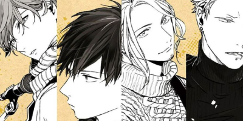
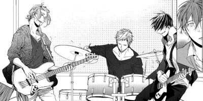
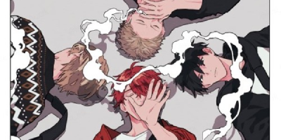

Historia
El estudiante de preparatoria y guitarrista Ritsuka Uenoyama repara las cuerdas rotas de una guitarra que pertenece a su compañero de clase, Mafuyu Satō, quien rápidamente le pide a Ritsuka que le enseñe a tocar el instrumento. Ritsuka se niega, aunque le permite a Mafuyu observar una sesión de práctica en su banda compuesta por él mismo, el bajista Haruki Nakayama y el baterista Akihiko Kaji.
Ritsuka acepta enseñar a Mafuyu a tocar la guitarra, y lo invita a continuar observando las sesiones de práctica de su banda. Durante una de sus lecciones, Mafuyu canta una melodía original para Ritsuka. Aturdido por su potencial, Ritsuka invita a Mafuyu a unirse a la banda.
Mafuyu rechaza la invitación de Ritsuka para unirse a la banda y este no comprende el porqué, llegando a pensar que Mafuyu le está evitando. Al plantear sus dudas a sus compañeros de banda, Haruki le menciona que es importante que escuche los motivo que tiene Mafuyu. Cuando Ritsuka se acerca a hablar con Mafuyu, ambos se encuentran con Hiiragi Kashima, un amigo del pasado de Mafuyu, que le trae dolorosos recuerdos.
Ritsuka acepta enseñar a Mafuyu a tocar la guitarra, y lo invita a continuar observando las sesiones de práctica de su banda. Durante una de sus lecciones, Mafuyu canta una melodía original para Ritsuka. Aturdido por su potencial, Ritsuka invita a Mafuyu a unirse a la banda.
Mafuyu rechaza la invitación de Ritsuka para unirse a la banda y este no comprende el porqué, llegando a pensar que Mafuyu le está evitando. Al plantear sus dudas a sus compañeros de banda, Haruki le menciona que es importante que escuche los motivo que tiene Mafuyu. Cuando Ritsuka se acerca a hablar con Mafuyu, ambos se encuentran con Hiiragi Kashima, un amigo del pasado de Mafuyu, que le trae dolorosos recuerdos.

Mafuyu se une oficialmente a la banda como guitarrista y vocalista, comenzando a conectar más con sus nuevos compañeros. Pero, ahora es Ritsuka quien debe moldearlo, para lo cual le acompañará a comprar un pedal para su guitarra en Shibuya.
La banda se prepara para dar un concierto en un pequeño auditorio, pero para ello necesitan pensar en algún tema que incluya voz para que Mafuyu pueda cantar. Ritsuka se empeña en componer una canción para Mafuyu. Por otra parte, conocemos las circunstancias de Akihiko y el secreto que Haruki oculta. Además, Ritsuka se entera de algunos rumores turbios que giran en torno al pasado de Mafuyu.
Akihiko visita a Ritsuka para mostrarle sus avances en la batería de la canción que está componiendo. A pesar de la extraña sensación que envuelve a Ritsuka, le pide a Mafuyu que escriba la letra de la canción que preparan. Haruki le propone que escriba sobre amor, pero todos señalan que es una mala idea. Sin embargo, Mafuyu se lo toma muy en serio y reflexiona sobre su dolorosa experiencia. Finalmente, Mafuyu decide contarle sobre su pasado a Ritsuka, quien se da cuenta de que la extraña sensación que lo ha atrapado todo este tiempo son celos.
La banda se prepara para dar un concierto en un pequeño auditorio, pero para ello necesitan pensar en algún tema que incluya voz para que Mafuyu pueda cantar. Ritsuka se empeña en componer una canción para Mafuyu. Por otra parte, conocemos las circunstancias de Akihiko y el secreto que Haruki oculta. Además, Ritsuka se entera de algunos rumores turbios que giran en torno al pasado de Mafuyu.
Akihiko visita a Ritsuka para mostrarle sus avances en la batería de la canción que está componiendo. A pesar de la extraña sensación que envuelve a Ritsuka, le pide a Mafuyu que escriba la letra de la canción que preparan. Haruki le propone que escriba sobre amor, pero todos señalan que es una mala idea. Sin embargo, Mafuyu se lo toma muy en serio y reflexiona sobre su dolorosa experiencia. Finalmente, Mafuyu decide contarle sobre su pasado a Ritsuka, quien se da cuenta de que la extraña sensación que lo ha atrapado todo este tiempo son celos.

Los sentimientos de Ritsuka comienzan a aflorar y eso hace que sus compañeros se percaten de que ocurre algo. No es el único confuso, puesto que Mafuyu no logra escribir la canción. A una semana del recital, los dos mayores del grupo toman una decisión por el bien de todos: detener los ensayos para que Mafuyu se concentre en la letra. Conscientes de que el éxito y el fracaso de la banda son dos caras de la misma moneda, deciden apostarlo todo y cada uno conversa con los más jóvenes sobre qué desean transmitir a través de su música. Por su parte, Akihiko reflexiona sobre la fuerza que puede tener el primer amor y conocemos más de su relación con Ugetsu Murata.
El evento en el recital está cada vez más cerca y Mafuyu todavía no ha escrito la canción, puesto que aún intenta aclarar lo que siente. El regreso de Hiiragi, un viejo conocido, sacará a relucir algunos hechos de su pasado. Cuando llega el día del concierto, la canción continúa sin tener letra, lo que deja a la banda en una encrucijada.
El evento en el recital está cada vez más cerca y Mafuyu todavía no ha escrito la canción, puesto que aún intenta aclarar lo que siente. El regreso de Hiiragi, un viejo conocido, sacará a relucir algunos hechos de su pasado. Cuando llega el día del concierto, la canción continúa sin tener letra, lo que deja a la banda en una encrucijada.

Página creada por David Bolívar - Medellín, 2024